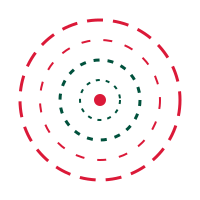
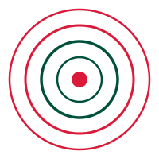

Acompanhamento multidisciplinar para crianças, adolescentes e adultos com TEA, T21, TDAH e outras condições do neurodesenvolvimento em Alphaville, Barueri.
Seg–Qui 08h–19h | Sex 08h–18h
A Cubo Terapias Completivas é uma clínica multidisciplinar especializada no atendimento de crianças, adolescentes e adultos com TEA (autismo), T21 (síndrome de Down), TDAH e outras condições do neurodesenvolvimento, localizada no coração de Alphaville, Barueri (SP).
Nosso propósito é promover o desenvolvimento e o bem-estar do paciente sem perder de vista a família como parte essencial do processo terapêutico. Trabalhamos para que cada pessoa alcance o máximo de autonomia possível, com base científica e planejamento individualizado.
Nossa equipe de fonoaudiologia, psicologia e terapia ocupacional atua de forma integrada — cada profissional conhece o histórico do paciente e colabora com os demais para garantir uma evolução real e consistente.

Um processo pensado para você e seu filho se sentirem acolhidos em cada etapa.
Você nos envia uma mensagem pelo WhatsApp. A nossa equipe responde rapidamente e apresenta as opções de atendimento.
Realizamos uma avaliação detalhada com a equipe responsável para entender o perfil e as necessidades do paciente.
Desenvolvemos um plano personalizado com as especialidades indicadas — tudo integrado e alinhado entre os profissionais.
As sessões podem ser semanais ou múltiplas por semana, conforme a necessidade clínica. A evolução é monitorada e o plano é ajustado sempre que necessário.

Cada especialidade tem um papel essencial no desenvolvimento do seu filho.
Desenvolvimento da fala, linguagem, comunicação e habilidades orais. Fundamental no acompanhamento precoce.
Suporte emocional, comportamental e cognitivo para pacientes e orientação aos familiares no dia a dia.
Desenvolve autonomia, coordenação e habilidades para as atividades do cotidiano, escola e vida social.
Suporte direto à família para compreender o processo terapêutico e aplicar estratégias no cotidiano, fortalecendo vínculos e potencializando resultados.
Localizada em Alphaville, em um moderno centro comercial com toda a infraestrutura que você precisa.
Espaço exclusivo para desenvolver habilidades do dia a dia, autonomia e interação social por meio de atividades culinárias.
Diferencial exclusivoUm ambiente pensado para que familiares e responsáveis se sintam acolhidos, confortáveis e próximos durante o processo terapêutico.
Sala 2714 – Av. Sagitário, 138. Fácil acesso, estacionamento e toda a comodidade de um centro comercial moderno.
Sala de integração sensorial, espaço de psicomotricidade e salas específicas de terapia ocupacional, fonoaudiologia e psicologia — cada uma preparada para o seu propósito terapêutico.
Torre London
Av. Sagitário, 138 – sala 2714
Alphaville – Barueri – SP
Nossos profissionais se comunicam e planejam juntos. O plano terapêutico é construído de forma conjunta e ajustado continuamente — seu filho é cuidado como um todo, não por partes.
A família faz parte do processo terapêutico. Mantemos uma comunicação constante com os responsáveis para que o cuidado continue em casa.
Nossa equipe é especializada no atendimento de pessoas com autismo e síndrome de Down, com profundidade científica e experiência clínica específica.
Nosso objetivo é que cada paciente alcance o máximo de autonomia possível. Trabalhamos habilidades reais para a vida cotidiana, a escola e a vida social.
Cada paciente é único. O plano terapêutico é construído com embasamento científico e totalmente adaptado às necessidades de cada pessoa e família.
Respondemos as perguntas mais comuns dos pais que chegam até nós.
No momento trabalhamos com atendimento particular. Entre em contato pelo WhatsApp e podemos detalhar os valores e formas de pagamento disponíveis.
Atendemos a partir dos 2 anos de idade. Quanto mais cedo iniciado o acompanhamento terapêutico, melhores tendem a ser os resultados. Mas também atendemos adolescentes e adultos.
Não é obrigatório ter diagnóstico fechado para iniciar o atendimento. Se você percebe atrasos no desenvolvimento, como na fala ou no comportamento, já é motivo suficiente para buscar uma avaliação.
O atendimento é individualizado e multidisciplinar. Após uma avaliação inicial, traçamos um plano terapêutico com as especialidades mais indicadas para o perfil do seu filho — fonoaudiologia, psicologia e/ou terapia ocupacional.
Não é obrigatório, mas é bem-vindo. Qualquer documentação anterior (laudos, relatórios de escola, avaliações) ajuda nossa equipe a entender melhor o histórico do paciente.
A frequência varia conforme o plano terapêutico de cada paciente. Em geral, as sessões são semanais por especialidade. Tudo é definido após a avaliação inicial.
Depende da especialidade e da idade do paciente. Em muitos casos, orientações aos responsáveis fazem parte do processo terapêutico, pois o acompanhamento em casa é fundamental para a evolução — podendo acontecer também de forma remota quando necessário.
Sim! Estamos na Torre London, Av. Sagitário, 138 – sala 2714, Alphaville, Barueri – SP. O condomínio tem estacionamento e é de fácil acesso pela Rodovia Castello Branco e pela Rua Flórida.
Entre em contato agora mesmo pelo WhatsApp.
Nossa equipe vai te orientar sem pressa.
📍 Torre London – Av. Sagitário, 138 sala 2714 – Alphaville, Barueri – SP
Seg–Qui 08h–19h | Sex 08h–18h